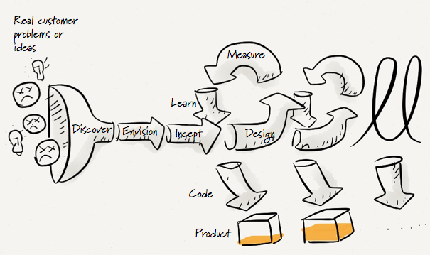
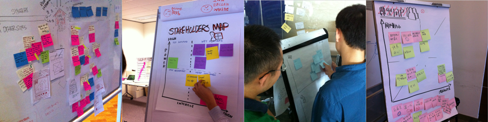
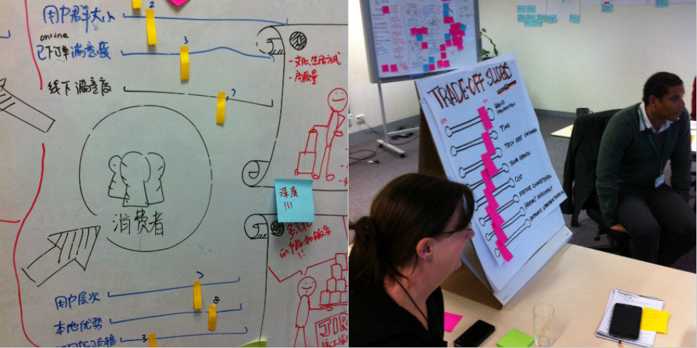
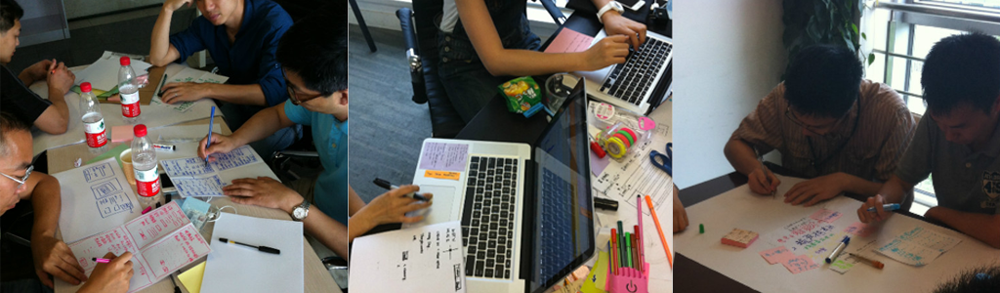
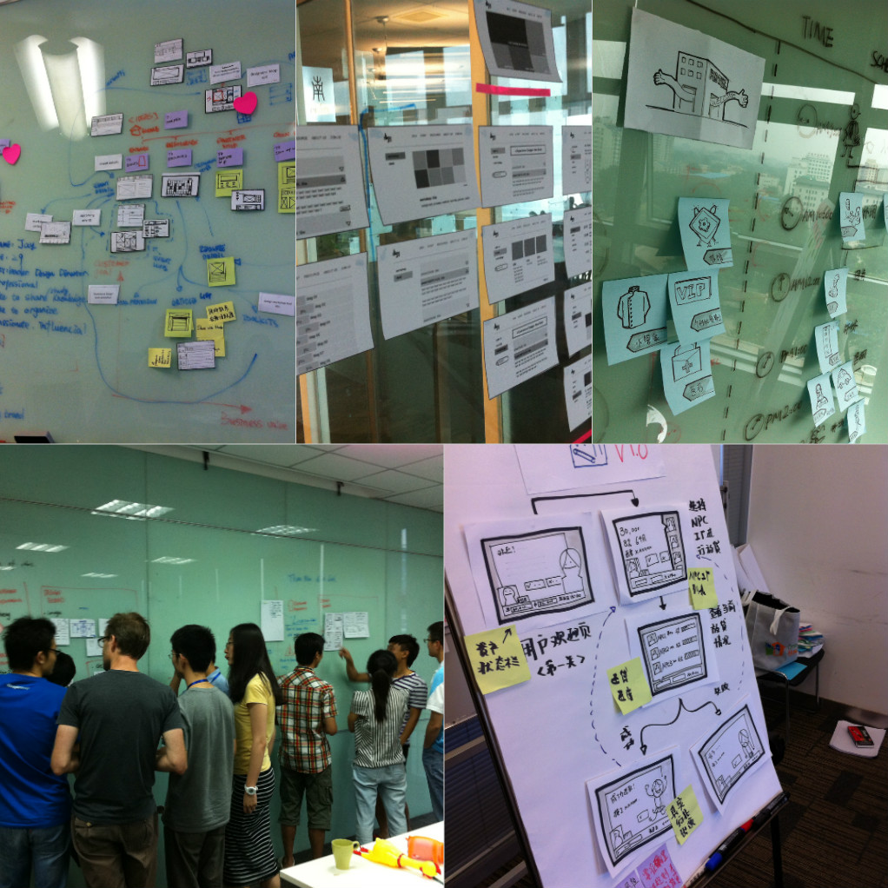
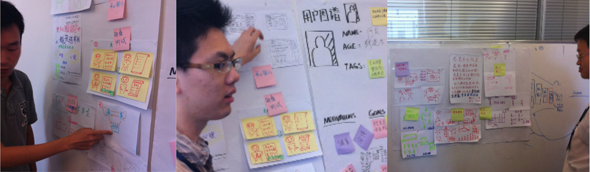
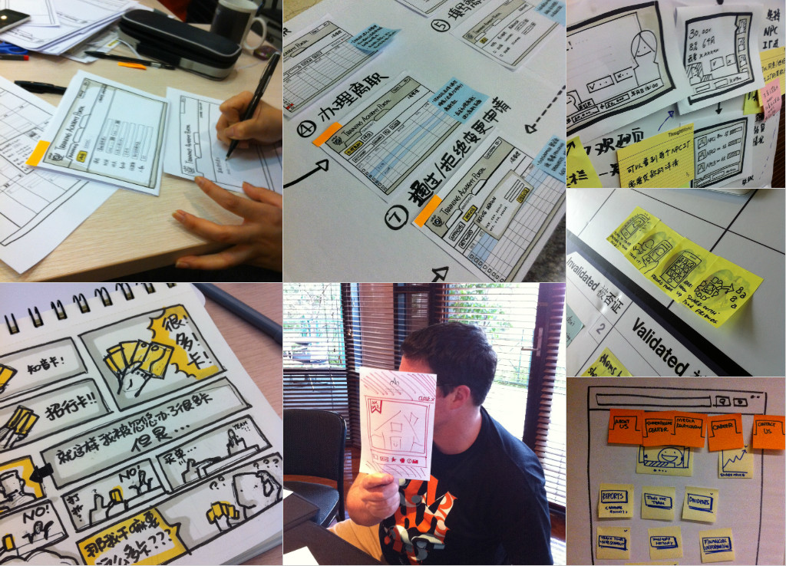
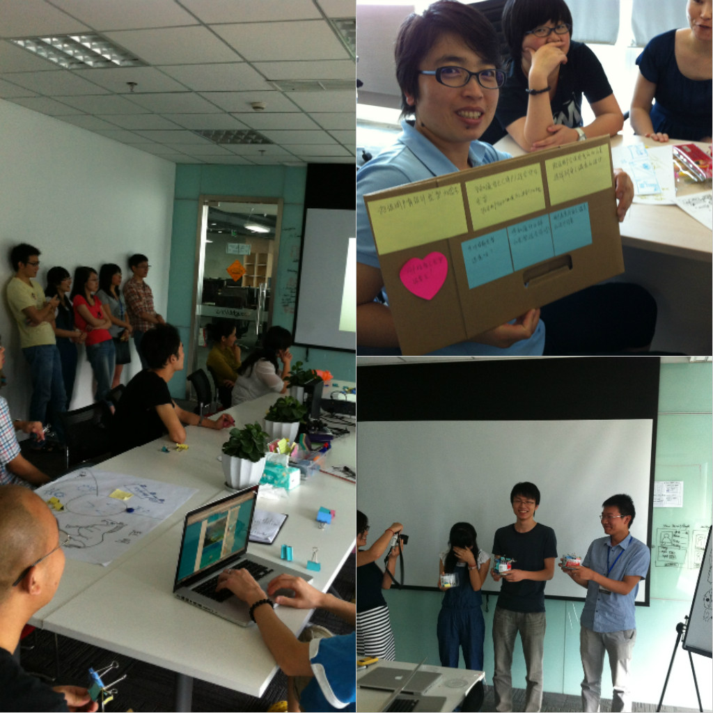

设计的核心应该是现实的（Rational），无论从时间还是资源成本出发，衡量一个好的体验设计活动的重要一点是它是否收敛到足够好的设计和可开发的最小交付计划；而往往，因为设计本身经常被错误地等同为充满想象力的创想活动，收敛被很多人所忽视，或是力不从心，结果是，这个活动被陷入在无休止的争论，漫无目的地发散，或者领导者的口若悬河。
体验设计师的核心能力不应该只是设计的决策者，更应该是设计团队的引导者，而引导本身的含义便是，带领不同的人，达到：
- 快速达成一致；
- 尽可能小而精的第一个版本产品设计；
本篇为大家介绍的是我常用的收敛方法，期望帮助大家在保证设计准确性的基础上，提高设计活动的效率。
基础：Agile UX的漏斗模型
Agile UX的产出物是足够开发量的用户故事和足够进行测试的交互原型，这两个“足够”便是我们整个设计过程的目标。Agile UX的设计漏斗实质上和价值定位的完整体现，即：客户假设（Customer Hypothesis）、问题假设（Problem Hypothesis）、以及方案假设（Solution Hypothesis）。
- 我假设有这样的客户在某个情景（Context）下，受某种驱动的驱使（Motivation），产生某种需要（Need），并转化成某种行动目标（Goals）；
- 我假设上述的客户，在完成上述目标时，会发生某种问题（Problem）；
- 我假设“上述客户”在完成“上述目标”过程中遇到“上述问题”时，会选择我的解决方案（Solution）。
于是整个设计过程是在每个层次上逐层下沉的，即当我们限定了某个情景时，就不需要讨论其他情景下的情况；当我们确定了我们的问题时，就不会尝试解决其他问题，任何在对其他问题的讨论都应该暂停。下图是一个体验设计的漏斗，看真实世界的问题是如何通过体验设计的各个阶段沉淀到逐步演化的产品中去的。

往往我们会抛开最开始的解决方案，而避免陷入到解决方案的PK当中，因为带着解决方案进行讨论的各位经常尝试为不同的客户，解决不同问题，当一个设计团队没有对客户及问题定位达成一致时，任何对解决方案的探讨都是浪费时间，且往往难以达成一致。
01.使用坐标图
坐标轴是我们尝试进行收敛的工具之一。设计过程中免不了头脑风暴，为了保证头脑风暴的产出物能够在第一时间进行评价（Evaluation），我经常使用坐标轴代替漫无目的贴条。下图中显示了各种坐标轴分类头脑风暴产出物的例子。

坐标轴的横纵坐标可以根据情况进行选择，例如如果是对目标客户进行头脑风暴，可以这样定位横纵坐标：
- 横轴：客户潜在的商业价值；
- 纵轴：现有客户的数量；
例如对内容组合进行头脑风暴：
- 横轴：内容本身产生的成本；
- 纵轴：内容对某一类客户的吸引力；
例如对某类用户对某类功能的要求；
- 横轴：没有这个功能，某类用户生气的可能性；
- 纵轴：有这个用户，我们需要付出的成本；
这些自定义的坐标图帮助引导大家对头脑风暴的结果做归类，并通过评估结果快速达成一致，不单单是设计活动，很多项目管理的时候也可以使用这个方法。
02.使用滑杆（Slider）
滑杆也是对头脑风暴的产出物进行评估的方法，我们的方法是：
- 将头脑风暴的结果变成若干个滑杆；
- 邀请大家第一时间进行1到10满意度评估，方法是用手指第一时间表达出分数，不许跟票，如果出现分歧较大的情况说明理由；
- 最后将分数用贴条表达成滑杆的最终状态，大家对创意点的感受一目了然。
下面是两个使用Slider为头脑风暴结果做收敛的例子：

当然我们必然面对有些人的意见被忽略，因此我们会尽可能早地多做这种设计决策活动，每次头脑风暴结束都需要进行收敛，这个过程进行得越早，越有效果，成功率也越高。
03.集体进行创意
避免能力超强的人主导整个设计，期待整个设计团队在模糊和权衡中一起前进。避免个人英雄主义的方法是尽量拆开“设计英雄”（Design Hero）让他们和其他组员结对进行创意，在所有人完成创意前不允许进行创意展示。下面的图中展示了设计小组被分成更小的小组进行合作设计：

结对的目的一方面是让创意在成形之前就接受别人的意见，另一方面在结对中可以培养合作设计的习惯，避免过度保护自己的设计。
我们经常使用的结对创意方法是“四副草图”（4 Sketches）──使用A4纸一张将它对折两次，在4个区域完成4副草图表达一个解决方案。我之所以将流行的“六副草图”（6 Sketches）更改为四副，完全是因为4副图好折。
04.使用设计图板
收敛的最终表现是达成一致，而可视化永远是快速达成一致的不二法门。在我们的设计活动中我们大量使用设计图板，将设计过程完整的展示在工作室的墙壁上，设计决策完成围绕设计图板完成，而不是面对PPT召开设计稿评审会议。下面是各种设计图板，把所有的设计过程展现在大白板上，设计过程始终围绕图板展开。

对照Agile UX的漏斗模型，最简单的设计图板你可能需要下面几个：
- 典型用户的分布；
- 用户图谱；
- 用户体验地图；
- 设计原型；
- 用户故事识别；
这五块图板基本将：为谁设计？解决什么问题？怎么解决？如何计划？四个问题在设计团队内一一解答。
05.乐观帽和悲观帽
在和客户进行设计活动的过程中，经常出现陷入无止境的攻防中──一方对某个方案过于强烈的攻击；另一方对某个方案过于敏感的保护。为了挑战而挑战或者一味保护都不是好的设计心态，为了解决这个问题我们经常使用经典的乐观帽和悲观帽。图中正在对收集的设计方向进行“担忧”和“喜欢”收集：

我们对对照设计图板，要求大家统一戴上“悲观帽”，对自己的担心进行头脑风暴，贴在设计方案周围。注意这里有两个细节：
- 对大家说：“现在是担忧的时间，请对上面这些设计写上你的担忧”，这里我们并不说写上你“不喜欢的东西”而只是担忧，以避免变成挑错或者挑战时间； 让所有人写完所有担忧后再贴在设计方案旁边，避免当有人发现自己的设计有太多担忧而不自在。
- 悲观帽之后，我们会邀请大家戴上“乐观帽”，把自己对别人方案喜欢的地方进行头脑风暴，并贴在对应设计方案周围。
最后，我们会跟大家对“担忧”和“喜欢”进行总结，到这里，很多情况下大家的思路已经开始收敛到某一两个设计上来，设计方向在不知不觉中确定下来。
06.从“一”开始
产品是有生命的，且是慢慢演进的，最开始的时候我们希望我们的设计团队能够专注于最简单和最核心的体验，为了避免进入对未来的过度讨论，我们往往在一开始教育设计团队，我们的产品在数量上就是为“一个”服务──任何跟多个或者海量用户或内容相关的讨论都应该被适当制止。
有时候我们会任命一位成员为“一个纠察员”，任何跟多个或者海量用户和内容才能产生的需求相关的讨论都可以被他所制止。
以新浪微博的设计为例，以下内容的讨论应该被适当制止：
- 用户分组；
- 搜索；
- 内容排序；
- 粉丝列表；
要注意的是，这不代表我们在设计中不考虑这些，所以这个制止应该是当发生讨论到具体实现细节或者争执时。在基础体验没有完成前，对未来细节过多讨论是一种浪费。
07.尽可能晚提出解决方案
最不容易达成一致的往往是解决方案里的细节──这样做不够好；最容易发散的往往也是解决方案里的细节──我觉得那样做更好。为了避免过早地纠结于解决方案中的细节，我们尽可能地要求设计团队尽可能晚的提出解决方案。
而这个时间点便是我们对价值定为里的客户假设和问题假设有达成完全的一致，即我们已经决定为这样的用户解决这样的问题。
08.尽可能晚使用电子手段作为工具
与尽可能晚提出解决方案相类似的还有“尽可能晚使用电子手段作为工具”。为了避免不必要的细节讨论，尽快收敛，我们要求设计中尽可能少的出现过多细节，在我们对核心设计概念，信息架构，页面流转达成基础一致前避免使用计算机作为辅助工具。下图展示的是各种低保真的非电子化设计的结果：

我们尽可能地使用纸上原型和草图，只有在完整的概念模型被建立的基础上，我们再转而使用计算机进行更细节的设计。
09.模拟VC Pitching活动
收敛帮助形成小而精的产品设计，我们经常引用Lean Startup里面核心的MVP（Minimum Viable Product）来引导设计团队尽可能把设计做得小而完整。
当设计发生方向性分化的时候，我们有时会组织两支队伍进行模拟的VC Pitching活动，这个活动中，组员被要求应对VC的特点展示他们的设计方案，这些特点有：
- VC不理解技术，却关心你对所解决问题的分析和判断；
- VC关注一个完整的故事而不是功能；
- VC不愿意第一阶段投入大笔资金；
- VC对于前景很感兴趣；
针对这些特点，组员被要求展示：
- 为解决谁的什么问题做的设计；
- 如何用故事的方式讲解设计；
- 符合最小投入的最完整的设计，即MVP；
- 一个亮点。
下图展示我们邀请参与者快速进行模拟的VC Pitching

我们会给设计者十分钟的时间，使用PPT、故事陈述、原型展示、甚至小品的方式讲述给全团队，结束后给出提问时间，最终有全团队投票决定最终的设计方案。
10.不要为假设浪费时间争执
在一开始的时候，我们会将建立一个共识，即不要为假设浪费时间争执。我们所有的设计活动基本上基于假设，我们所定义出的价值定位本身就是三种假设的合体。任何对于假设的争执，大多数是不必要的。
我们要避免的讨论是：“我觉得你的方案不好玩”、“我不认为你的设计有人用”、“我觉得用户会这样用”。最好的方法是，要么找到验证“用户会这样用”的证明；要么先按照其中一个方案快速上线第一时间验错。
作为体验设计获得引导师要避免这样的讨论，既然大家都是在假设上进行设计，要么停下来验证，要么快速上线验证，在各自都不违反基本交互原理的基础上争论哪种更好，没有太大意义。
写在最后
在过去的五年里，我引导了几十场大小不同的设计活动，我最能深刻体会到的是，正确引导才能让整个设计团队交响，它体现在对大局的把握、对团队的激发、恰到好处的点拨、果断理智的决断、拥抱挑战的心态等等，这也是一个优秀的体验设计师必备的能力。
体验设计活动不是简单的使用贴纸和手绘，它是收敛和引导的艺术，通过互动和协作，充分发挥设计团队的能力，第一时间达成一致，设计出小而精的产品，为持续演进打下基础。